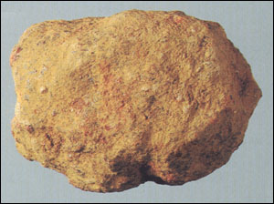

从左派对“大救星”一词的信口雌黄看左派的气数已尽！
2006/4/21 16:40:39

左派惯于信口雌黄，这一点早被历史了。信口雌黄当然意味着胡说八道，然而胡说八道不一定就是信口雌黄。像右派，也一样的胡说八道，但右派是幼派、是傻子，而信口雌黄却不是傻子能干的，即使是因为脑子进水而信口雌黄了，也是因为心里的坏水更多。
最近本ID用一个“大救星”就把左派挑逗得大肆表演其信口雌黄的把戏，一个“大救星”，在左派的信口里雌黄了N的N次方个来回。在他们那里，“大救星”一会儿是神、一会儿是比神还要神的物体、一会儿是启明星、一会儿是北斗星、一会儿是方向、一会儿是太阳、一会儿是感恩、一会儿是谢主龙恩，总之，这N的N次方个来回能来回出多少玩意才完事，其前提就是左派心中坏水的耗尽。
左派心里有什么坏水，不用把他们开膛裂肚就能知道。左派不过在玩一种和孔老二子孙一样的游戏，一样的痴心妄想。孔老二的子孙把中国玩了两千年，以为他们的偶像性孔就可以把中国玩到千疮百孔而功劳大大，现在还在叫嚣要全世界人陪他们玩。而左派呢，和孔派子孙一个德行，如文革般把中国玩到满地鸡毛了还想继续折腾。
左派对现实不满，左派企图和右派一样胡汉三一番，这就是所有左派伎俩的最终伎俩。但历史不会给机会你们了，历史曾把机会给你们而你们已经玩烂、玩完了。网络上左派的雌黄把戏只是证明了，左派已经给废剩一张嘴了，除了在虚拟的空间信口一下，你们在现实中气数已尽，连门都没有了！